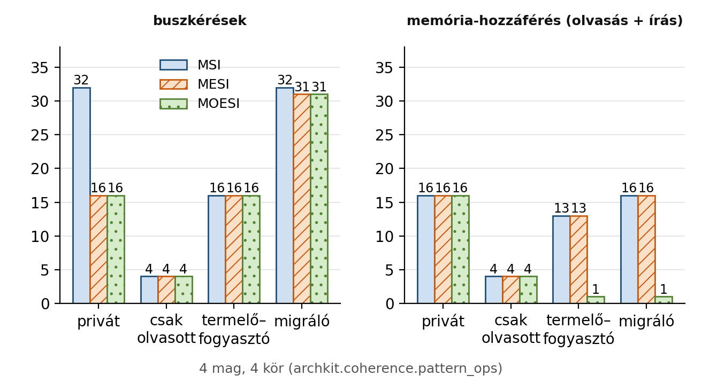

Egy többszálú program legtöbb adatát egyetlen szál használja: a saját
vermét, a saját részösszegeit, a tömb ráeső szeletét. Futtass négy
szálat, mindegyik járjon végig a saját tömbrészén, és minden elemet
olvasson be, majd írjon vissza (a saxpy kernel mintája).
Egyik mag sem látja a másik adatát, koherenciaproblémája nincs.
Az A koherencia problémája és az
MSI-protokoll MSI-protokollja mégis soronként két
buszkérést küld: olvasáskor BusRd-t (a sor S állapotba
kerül), íráskor pedig BusUpgr-et, hogy érvénytelenítse a
nem létező többi másolatot. A szimulátorban négy mag, magonként négy
saját sor esetén ez 32 buszkérés, pedig 16 elég volna. Megosztott
busznál a fölösleges kérés nemcsak késleltetés, hanem más magok elől
elvett sávszélesség is.
Hasonló pazarlás, hogy MSI alatt minden módosított sor átadása a memóriát is írja, akkor is, ha az érték egy pillanat múlva újra megváltozik. A MESI és a MOESI protokoll egy-egy új állapottal ezt a két pazarlást szünteti meg.
Két kérdést érdemes a sorról feljegyezni azon túl, hogy érvényes-e: van-e másnak is másolata, és ki felel a memória frissítéséért.
Az alábbi ábra ugyanazt a nyolc műveletet futtatja le a három
protokollon. Figyeld meg a 2. lépést: MSI alatt BusUpgr
megy, MESI és MOESI alatt semmi. A 3. lépéstől a MOESI-oszlopban az O
állapot jelenik meg, és a memória csak a legvégén, a 8. lépésben
íródik.
Definíció. A MESI protokoll az MSI M, S, I állapotai mellé felveszi az E állapotot: a sor tiszta (egyezik a memóriával), és pontosan ez az egy cache tartja. Az E sorból az M-be való átmenet csendes (silent upgrade): nem jár buszüzenettel [S-MESI], [S-PRIMER].
Honnan tudja a kérő, hogy senki másnak nincs másolata? A buszon van
egy megosztottsági jel (shared signal):
BusRd alatt minden cache, amely tartja a sort, bekapcsolja.
Ha a jel aktív, a kérő S állapotba kerül, különben E-be. A jel egyetlen
közös vezeték („huzalozott VAGY”), a Boole-algebra,
kapuk és a CMOS-tranzisztor szellemében bármelyik forrás be tudja
kapcsolni.
Az MSI-hez képest csak ezek a sorok változnak:
| helyzet | MSI | MESI |
|---|---|---|
| olvasási hiba, senki másnak nincs | → S | → E |
| írás E állapotban | (nincs E) | → M, üzenet nélkül |
idegen BusRd E állapotú sorra |
(nincs E) | → S |
idegen BusRdX E állapotú sorra |
(nincs E) | → I |
| E sor kiszorítása | (nincs E) | csendes, a memória friss |
Az SWMR-invariáns E mellett is teljesül: E kizárólagos, ezért a többi cache-ben legfeljebb I lehet. Ha E sorra idegen olvasás jön, az E azonnal S-re vált, mielőtt a másik olvashatna.
Ki adja az adatot tiszta sornál? Az eredeti Illinois-protokoll a másik cache-ből adja, mert az gyorsabb lehet a memóriánál [S-MESI]. Ez viszont bonyolít (több S tartó közül valakit ki kell választani), ezért a könyv szimulátora tiszta sornál mindig a memóriát használja; a módosított (M) sort természetesen a tulajdonos adja.
MSI és MESI alatt, amikor egy M sort más olvas, a tulajdonos
Flush-t ad, és a memória is megkapja az adatot, mert az S
állapot azt ígéri, hogy a memória friss.
Definíció. A MOESI protokoll
felveszi az O állapotot: a sor módosított (a memória
elavult), de mások is tarthatnak belőle S másolatot. Az O tartó a
felelős tulajdonos: ő válaszol a BusRd
kérésekre (cache–cache átadás), és ő írja vissza az adatot a memóriába,
amikor a sort kiszorítja [S-PRIMER].
Az átmenetek:
BusRd M sorra: M → O,
Flush a kérőnek, a memória nem íródik;BusRd O sorra: marad O, újra ő ad adatot;BusUpgr, a többi másolat
érvénytelen, a sor → M;BusRdX / BusUpgr O sorra: → I (a
felelősség az új M tulajdonosra száll);Flush a memóriába.Egy lényeges következmény: MOESI alatt az S állapot nem jelenti, hogy a memória friss. Ha létezik O tulajdonos, az S másolatok az O értékével egyeznek, a memória viszont elavult.
Az öt állapot három tulajdonságból áll össze:
| állapot | érvényes? | kizárólagos? | ő felel a memóriáért? | írás előtt üzenet kell? |
|---|---|---|---|---|
| M | igen | igen | igen | nem |
| O | igen | nem | igen | igen (BusUpgr) |
| E | igen | igen | nem | nem |
| S | igen | nem | nem | igen (BusUpgr) |
| I | nem | – | nem | igen (BusRdX) |
A táblából látszik, hogy a csendes írás feltétele a kizárólagosság, a visszaírásé pedig a felelősség. Két tartó között ezért a megengedett párok: (M, I), (E, I), (O, S), (O, I), (S, S), (S, I), (I, I) és ezek fordítottjai.
A valódi processzorok sokféle változatot használnak. Az Intel MESIF protokolljában egy F (Forward) állapotú, tiszta másolat felel a kiszolgálásért, hogy sok S tartó esetén se válaszoljanak többen (ellenőrizendő: a pontos viselkedés termékfüggő) [S-PRIMER]. AMD-processzorok dokumentációja MOESI-t említ (ellenőrizendő a célgépen). Léteznek frissítéses protokollok (például a Dragon), és a protokollok helyességét iparban formális modellellenőrzéssel vizsgálják; ez utóbbit a könyv csak megemlíti.
Négy mintát érdemes ismerni; ezeket az
archkit.coherence.pattern_ops állítja elő
magra és
körre.
| minta | mit csinál egy kör | tipikus programbeli példa |
|---|---|---|
| privát | minden mag új saját sort olvas, majd ír | saját tömbszelet, verem |
| csak olvasott | minden mag ugyanazt a sort olvassa | konstans tábla |
| termelő–fogyasztó | P0 ír, a többi olvas | üzenet, állapotjelző |
| migráló | sorban minden mag olvas, majd ír egy közös sort | zárral védett adat |
A buszkérések és a memóriaírások száma
magra,
körre (a szimulátor számai a Kód részben igazolják):
| minta | MSI kérés | MESI/MOESI kérés | MSI/MESI memóriaírás | MOESI memóriaírás |
|---|---|---|---|---|
| privát | 0 | 0 | ||
| csak olvasott | 0 | 0 | ||
| termelő–fogyasztó | 0 | |||
| migráló | 0 |
Az E a privát adaton nyer: minden sornál egy kérést spórol. A migráló mintán csak a legelső olvasás kap E-t, utána mindig más tartja módosítva a sort, így a nyereség egyetlen kérés. Az O ott segít, ahol módosított adatot olvasnak át más magok: a buszkérés nem lesz kevesebb, de a memória írása elmarad (a végső visszaírást a kiszorítás halasztja).

A jobb oldali panel mutatja az O hatását: a termelő–fogyasztó és a migráló mintán a MOESI szinte teljesen elhagyja a memóriát, az adat cache-ről cache-re jár.
Továbbvitt eredmény. MESI: az E állapot a privát adat „olvasás, majd írás” mintáján soronként egy buszkérést takarít meg. MOESI: az O állapot a módosított adat megosztásakor elhagyja a memóriaírást. A forgalmat mintánként számoljuk (buszkérés, memória-hozzáférés, cache–cache átadás); erre a számlálásra épít a Directory-alapú koherencia és skálázódás, A koherencia ára: ping-pong és false sharing, az Atomi műveletek a hardverben és a Zárak és tranzakciós memória.
Három mag, egy x sor, a memóriában 0. Műveletek: P0
olvas, P0 ír 1-et, P1 olvas, P2 olvas, P1 ír 2-t, P0 olvas, P0 kiüríti,
P1 kiüríti.
| # | művelet | MSI: állapotok, busz | MESI | MOESI |
|---|---|---|---|---|
| 1 | P0 olvas | S I I, BusRd |
E I I, BusRd |
E I I, BusRd |
| 2 | P0 ír 1 | M I I, BusUpgr |
M I I, – | M I I, – |
| 3 | P1 olvas | S S I, BusRd+Flush |
S S I, BusRd+Flush |
O S I, BusRd+Flush |
| 4 | P2 olvas | S S S, BusRd |
S S S, BusRd |
O S S, BusRd+Flush |
| 5 | P1 ír 2 | I M I, BusUpgr |
I M I, BusUpgr |
I M I, BusUpgr |
| 6 | P0 olvas | S S I, BusRd+Flush |
S S I, BusRd+Flush |
S O I, BusRd+Flush |
| 7 | P0 kiürít | I S I, – | I S I, – | I O I, – |
| 8 | P1 kiürít | I I I, – | I I I, – | I I I, Flush |
A különbségek lépésenként:
BusUpgr-et küld. MESI és MOESI E-ből csendben vált
M-re.Flush-t ad, de
MOESI nem írja a memóriát, és P0 O állapotban marad.Flush-t.Összesítés: buszkérés MSI 6, MESI 5, MOESI 6 (a MOESI-nél a kiürítési
Flush is kérés); memóriaírás MSI 2, MESI 2, MOESI 1.
Memóriaolvasás: MSI és MESI 2 (1. és 4. lépés), MOESI 1.
A compare_protocols ugyanazt a nyomot futtatja mindhárom
protokollon; a Snoop objektum transactions
tulajdonsága a buszkéréseket, a stats a többi számlálót
adja.
import sys; sys.path.insert(0, "code")
from archkit import coherence as C
SEQ = "P0R P0W1 P1R P2R P1W2 P0R P0E P1E"
res = C.compare_protocols(C.parse_ops(SEQ), 3)
for name, sim in res.items():
s = sim.stats
print(f"{name:<6} kérés={sim.transactions} mem.olv={s['mem_reads']} "
f"mem.írás={s['mem_writes']} cache–cache={s['c2c']}")
print("\n".join(C.format_steps(res["MOESI"].steps[2:4], {0: "x"})))MSI kérés=6 mem.olv=2 mem.írás=2 cache–cache=2
MESI kérés=5 mem.olv=2 mem.írás=2 cache–cache=2
MOESI kérés=6 mem.olv=1 mem.írás=1 cache–cache=3
3 P1 olvas x BusRd, Flush(P0) O:1 S:1 I:- mem=0
4 P2 olvas x BusRd, Flush(P0) O:1 S:1 S:1 mem=0A kimenet utolsó két sora a lényeget mutatja: a memória 0, mégis mindkét olvasó a friss 1-est kapja. Most a mintákra, , :
for name in C.PATTERNS:
r = C.compare_protocols(C.pattern_ops(name, ncores=4, rounds=4), 4)
kérés = "/".join(str(r[p].transactions) for p in ("MSI", "MESI", "MOESI"))
írás = "/".join(str(r[p].stats["mem_writes"]) for p in ("MSI", "MESI", "MOESI"))
print(f"{name:<18} kérés {kérés:<9} memóriaírás {írás}")private kérés 32/16/16 memóriaírás 0/0/0
read_only kérés 4/4/4 memóriaírás 0/0/0
producer_consumer kérés 16/16/16 memóriaírás 4/4/0
migratory kérés 32/31/31 memóriaírás 15/15/0Ellenőrizd a táblázat képleteit: privát és ; migráló és , memóriaírás .
Az interaktív ábrán a Minta, Magok, Körök választókkal állíthatod a nyomot; saját sorozat mintánál a szövegmezőbe írhatsz.
P0R P0W, majd
P0R P1R P0W. Az elsőnél a MESI egy kérést spórol; a
másodiknál már nem, mert P1 olvasása az E állapotot S-re rontotta.Flush helyett memóriaolvasást ír.
Ok: MSI-ben megszokta, hogy S = friss memória.
Javítás: nézd meg, van-e O tulajdonos; ha van, ő
válaszol.Flush választ külön
buszkérésnek számolja. Ok: a válasz a kérő
tranzakciójának része. Javítás: a kérés a
BusRd, BusRdX, BusUpgr és a
kiszorítási visszaírás.x = 0:
P0W5, P1R, P1W6, P0R. Töltsd ki a MESI és a MOESI állapot-
és üzenettáblát, és számold a memóriaírásokat.A MESI az MSI-t az E (kizárólagos,
tiszta) állapottal bővíti: ha BusRd közben senki sem jelzi
a megosztottsági vonalon, hogy tartja a sort, a kérő E-be kerül, és
később üzenet nélkül írhat. Ez a privát adaton felezi a buszkéréseket. A
MOESI az O (tulajdonolt) állapottal
engedi, hogy a módosított sort mások is olvassák a memória frissítése
nélkül; a visszaírás az O tulajdonos feladata, kiszorításkor. A
protokollok forgalmát megosztási mintákon (privát, csak olvasott,
termelő–fogyasztó, migráló) érdemes számolni: az E a privát, az O a
módosítva megosztott adaton nyer, a csak olvasott mintán mindhárom
egyforma.
BusUpgr-et; a privát „olvas, majd ír” mintán.BusRd közben jelzi, hogy más cache is tartja a sort,
így a kérő S-t kap E helyett.BusUpgr kell. Mindkettő felel a
memóriáért.1. MESI: P0W5: BusRdX, M
I; P1R: BusRd+Flush (memória 5),
S S; P1W6: BusUpgr, I M; P0R:
BusRd+Flush (memória 6), S S. Memóriaírás: 2.
MOESI: ugyanazok az üzenetek, de az állapotok M I, O S, I M, S O;
memóriaírás: 0 (a visszaírás a P1 kiszorításakor jönne).
2. Megengedett: (O, S), (S, S), (E, I). Tilos: (M, S) és (E, S), mert M és E kizárólagos; (O, O), mert egy tulajdonos lehet; (M, O), mert M mellett nem lehet más másolat.
3. Egy tömb
sor, négy szálnál 65 536 sor. MSI: soronként BusRd +
BusUpgr, összesen 131 072. MESI: 65 536. Csak írásnál
mindhárom protokoll soronként egy BusRdX-et küld: 65 536;
az E ilyenkor nem segít, mert nincs előtte olvasás. A kiszorítások
visszaírásait mindkét esetben külön kellene számolni, azok
protokollfüggetlenek.
4. Egy kör: P0 BusUpgr-rel ír, utána
hét olvasó. MESI: az első olvasó a P0 Flush-át kapja (1
cache–cache, 1 memóriaírás), a másik hat a memóriából olvas (6
memóriaolvasás). MOESI: mind a hét olvasó a tulajdonostól kap (7
cache–cache), memóriaolvasás és -írás 0.
5. Minden lépés egy véletlen sor olvasása, majd írása; 10% eséllyel a szomszéd tartományából.
import random
rng = random.Random(56)
ops = []
for i in range(200):
for core in range(4):
owner = core if rng.random() >= 0.1 else (core + 1) % 4
addr = 64 * (owner * 32 + rng.randrange(32))
ops += [C.Op(core, "R", addr), C.Op(core, "W", addr)]
for name, sim in C.compare_protocols(ops, 4).items():
s = sim.stats
print(f"{name:<6} kérés={sim.transactions:>4} mem.írás={s['mem_writes']:>3} "
f"érvénytelenítés={s['invalidations']}")MSI kérés= 512 mem.írás=128 érvénytelenítés=128
MESI kérés= 384 mem.írás=128 érvénytelenítés=128
MOESI kérés= 384 mem.írás= 0 érvénytelenítés=128Az 1600 műveletből MSI 512, MESI és MOESI 384 buszkérést küld: a ritka megosztás mellett is a privát hozzáférések dominálnak, ezért az E 25%-kal csökkenti a forgalmat. Az O a 128 memóriaírást teljesen elhagyja. Mivel ebben a modellben a cache korlátlan, a MOESI által halasztott visszaírások a nyom végéig nem történnek meg. Az érvénytelenítések száma egyforma, mert azt az írások és a megosztás mintája határozza meg, nem az új állapotok.
6. A kérő nem tudná, hogy egyedül van-e, ezért óvatosságból S-et kellene felvennie – az E előnye elveszne. Megoldás lehet, hogy (a) a többi cache válaszüzenettel jelez (például külön „megvan nálam” válasz a tranzakció végén), vagy (b) egy központi nyilvántartás tudja, ki tartja a sort, és az mondja meg, hogy a kérő kizárólagos jogot kap-e. A (b) ötlet a Directory-alapú koherencia és skálázódás témája.